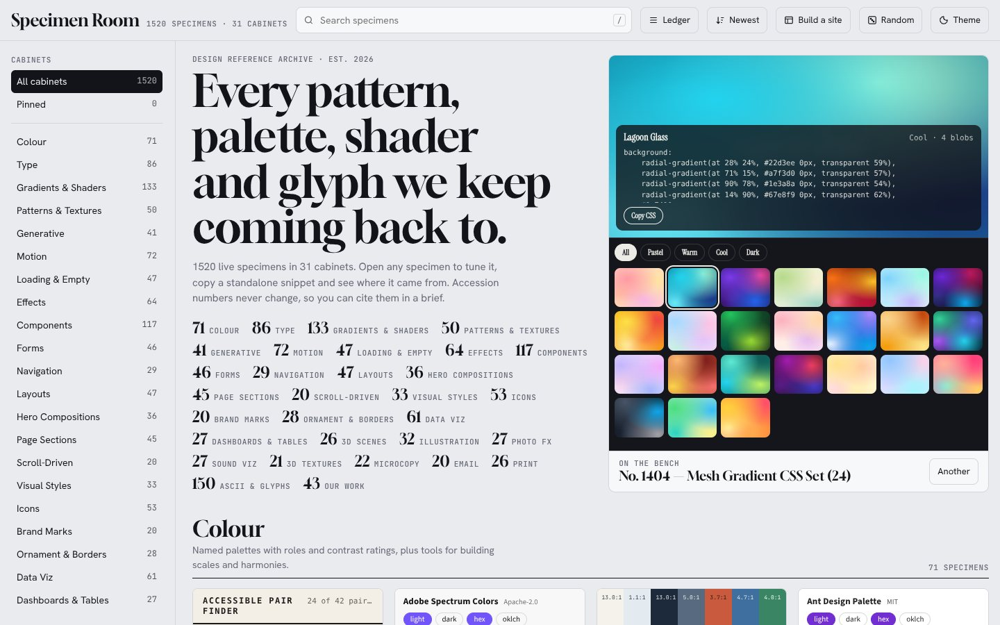
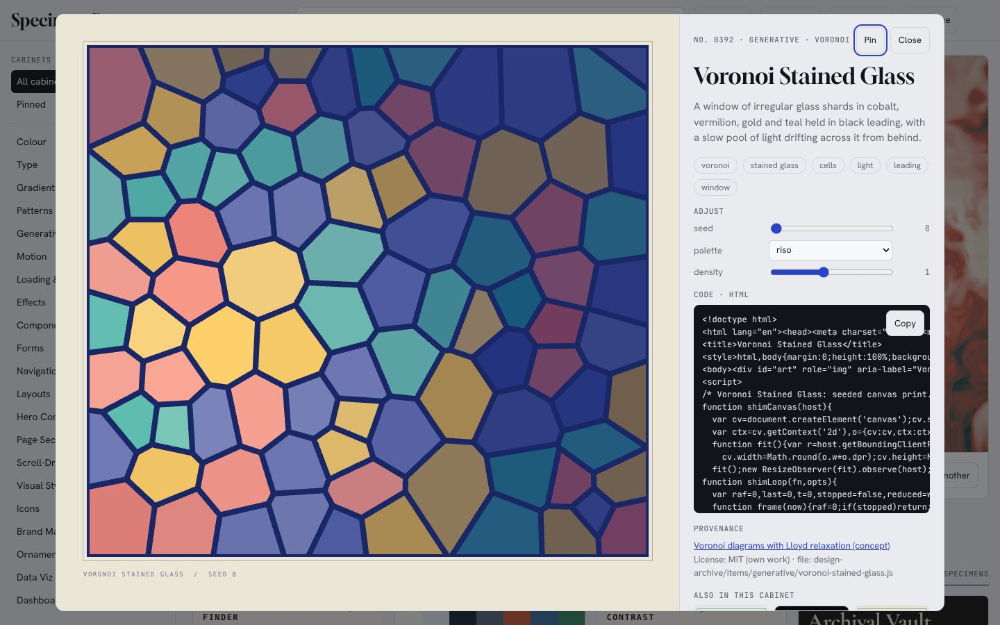
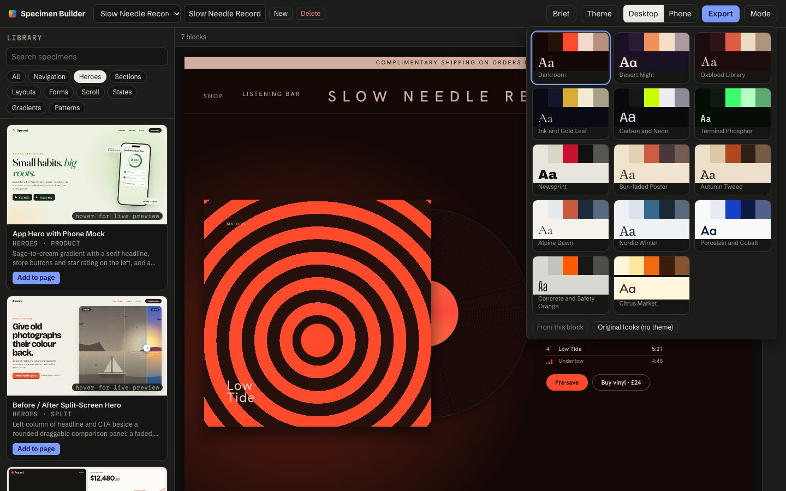

Specimen Room
design archive + site builder
A live design reference archive of 1,520 working specimens in 31 cabinets, from palettes, type and shaders to scroll effects, ornament and ASCII art, plus a website builder that assembles a whole one-page site from them. Every specimen can be tuned on the spot and copied as standalone code.
No public link yet
- Live specimens
- 1,520
- Cabinets
- 31
- Specimens with live controls
- 1,322
- Gradients and shaders
- 133
- ASCII and glyph pieces
- 150
- Site themes in the builder
- 14

How it grew
The archive went from 825 specimens to 1,520 in three days, in batches. Each batch was rendered, screenshotted wing by wing and checked before it went in, and every specimen keeps a permanent accession number, so nothing already cited moves.
- Oct 26
- 825
- Oct 26
- 947
- Oct 27
- 1,080
- Oct 27
- 1,211
- Oct 28
- 1,248
- Oct 28
- 1,520
The later batches came from three places: ideas rebuilt from scratch, ports from openly licensed libraries (shadcn, daisyUI, Tremor, Magic UI, Paper Shaders and others) with each license kept on the specimen, and a batch of form and section specimens written by Gemini from a house guide and held to the same checks.
What each specimen gives you
- A live sample, drawn in the browser rather than shown as a picture.
- Controls built from the specimen's own settings, so a palette, a seed or a speed can be changed and seen at once.
- Standalone code that reproduces exactly what is on screen, with a copy button.
- A permanent accession number, its source and its license, so a specimen can be cited in a brief.
How a page with 1,520 live pieces stays fast
- Loaded by cabinet: each cabinet's code arrives only when one of its specimens is about to be seen.
- Mounted near the screen only, a few per frame, and stopped again when scrolled away. Animation also pauses in background tabs.
- A WebGL budget: browsers keep about 16 live 3D contexts, so the archive holds at most 9 and unloads the ones farthest from the middle of the screen.
- Sealed styles: every specimen renders in its own shadow root, so no specimen's CSS can leak into another.

Where this site's effects came from
The picture index, the numbers that count up, the paper grain, the shader backdrops, the before-and-after sliders and the reading bar on this page were all chosen from the archive and rebuilt to fit this site's colours and appearance settings.
Specimen Builder: a website from the archive
Describe a business in a sentence, such as a record shop with a listening bar, and the builder lays out a one-page site from the archive's navigation bars, heroes, sections, forms and footers. Then it makes the result look like one site instead of a collage of seven.

What makes it helpful
- Starts from a brief. Claude picks a starter page of five to eight blocks and says why each fits. Without Claude, a local scorer fills the same slots from the brief's words, so it always works.
- One theme for the whole site. Fourteen themes built from the archive's own palettes and type pairings, or "from this block" to borrow the look of one you like.
- Copy for your business. Claude rewrites each block's text for the brief, keeping lengths close, and every line can be edited by hand.
- Exports one file that rebuilds the page on load, as a normal web page or a page ready to publish on Claude.
The hard part: one site, not a collage
Every specimen arrives with its own fonts, colours and invented brand. The re-skin pass reads every colour in a block, sorts it by tone against that block's own background, and maps it onto the theme's ramp, with strong colours becoming the accent. Fonts follow the theme, and the shop's name replaces each specimen's fake brand in headers and footers. A final pass pushes any text below the AA contrast standard back toward legibility.
Checked on 231 blocks across seven cabinets with no render errors, and on 156 text pairs in three themes with none below AA. The same check on the unthemed page finds failures, so it can fail.


Built with Claude Code under my direction. I chose what goes into each cabinet and judged every specimen; Claude wrote the specimens, the catalog, the archive's viewer and the Specimen Builder, and Gemini added two batches of form and section specimens following a written guide. When the first version of the builder produced collages, I said so, and the second version was rebuilt around the theme and re-skin pass.